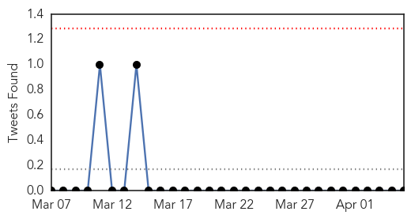
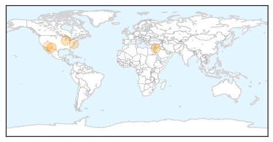
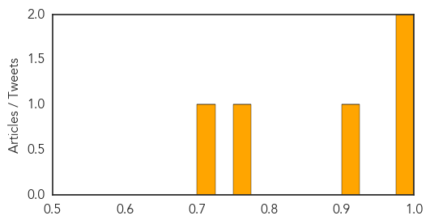

Influenza
30-Day Web Trend
30-Day Twitter Trend
0 alerts, 0 warnings

Article Locations
Article Confidences
Top Articles:
Top Tweets:
-
No tweets found for Apr 05, 2015
Unknown
30-Day Web Trend
0 alerts, 0 warnings

30-Day Twitter Trend
0 alerts, 0 warnings

Article Locations


Article Confidences

Top Articles:
- 0.917
- Chicago Tribune
- 0.917
- Chicago Tribune
- 0.886
- CDC: Nasty flu season has peaked, is retreating
- 0.878
- Foodborne Bacteria Resistant to Drugs Found in US; Cases Linked to the Dominican Republic, Haiti & India
- 0.845
- More than 1.5 mn children to be immunised against Japanese encephalitis in Lao PDR with GAVI support – The Financial Express
- 0.821
- Partners Unite to Battle Brain Fever
- 0.774
- Kidney disease fear grips Ganjam village
- 0.751
- Drug-resistant shigella spreading around U.S.: CDC
- 0.748
- April marks Parkinson's disease Awareness Month
- 0.740
- Ban on import of catfish imposed
- 0.737
- Alabama Feral Hog Hunters Cautioned about Swine Brucellosis Outdoor News Daily
- 0.673
- The Westside StoryThe Westside Story
- 0.608
- Consuming Water At Your Own Risk
- 0.603
- TB cases detected at Des Moines high school
- 0.598
- Inside Morgellons, The Internet's Disease
- 0.591
- ALERT : Mysterious outbreak at 1st plain of Petit-Goâve
- 0.581
- Muslim leader calls for doubling number of mosques in France
- 0.571
- Italy rescues 1,500 boat migrants in less than 24 hours
- 0.569
- Treatments on the fly: Asia a top destination for medical tourism
- 0.530
- Pope decries religious persecution, Kenyan killings
- 0.521
- Palestinians threaten Israel with ICC over frozen funds
- 0.515
- Night owls run higher risk of health problems - Cleveland 19 News
- 0.514
- Canine Flu Spreading Around Northern Illinois
Top Tweets:
-
No tweets found for Apr 05, 2015